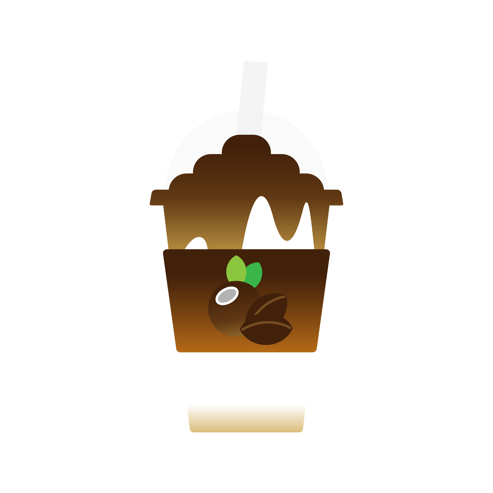
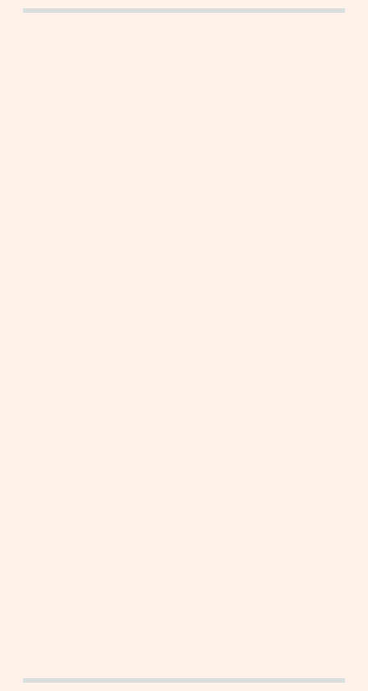
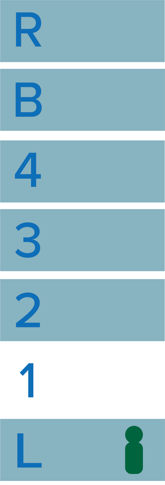
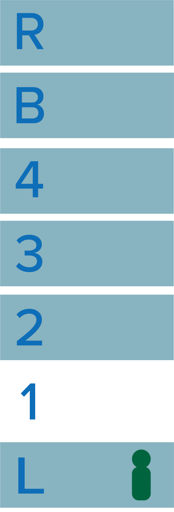

<카페코지>
코코넛 커피 스무디(이하 ‘코커스’)가 대표메뉴인 카페코지는, 2017년 대동제에서 처음 코커스를 선보인 후 52번가에 문을 열었다. 학교 앞 2.5평의 작은 공간에서 시작해 현재 전국 60여개 이상의 점포를 운영 중인 프랜차이즈 브랜드로 성장했다. 그리고 현재, 카페코지의 사장님은 2021년 '굿바이 슈가베어'라는 포케 가게로 52번가에 돌아왔다.


 
